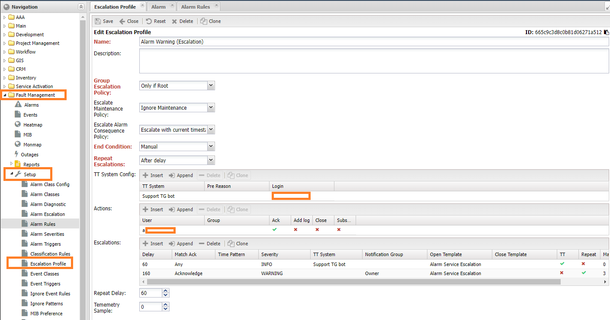
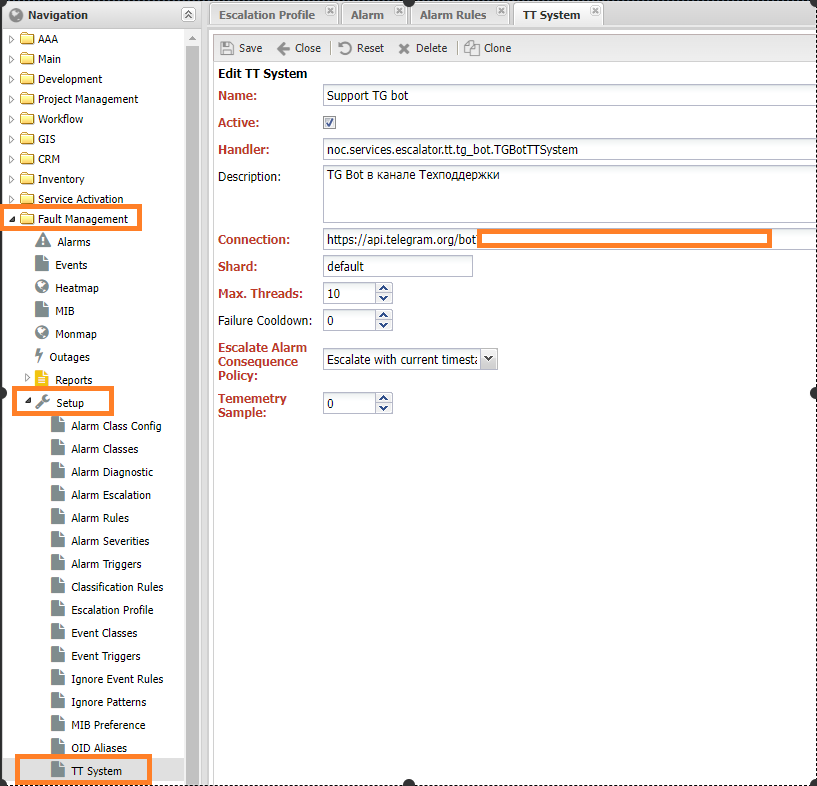
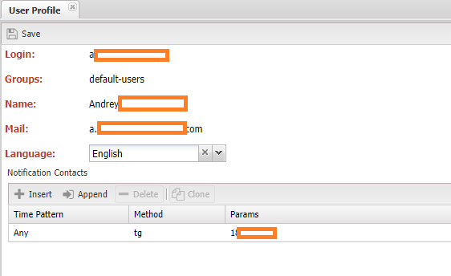

Описание настройки эскалации аварий¶
Механизм эскалации позволяет передать сведения об аварии (Alarm) внешнему адресату. Это может быть человек (контакт) или внешняя система (TT Система в терминах НОКа), что позволяет организовать работу с аварией без доступа к системе. В общем виде эскалация (Escalation) представляет собой цепочку действий (Action), разделённые временным интервалом. В дополнении к интервалу доступны условия по Важности (Severity) и Зона ответственности (Administrative Domain) аварии. При наступлении времени доступно одно из следующих действий:
- Отправка уведомления
- Создание документа во внешней системе
- Подтверждение (Ack) аварии
После успешного выполнения действия эскалация приостанавливается до наступления следующего шага (step) и так до конца цепочки. По окончании эскалации возможно выполнение финального действия:
- Завершить эскалацию
- Закрыть аварию
- Повторить эскалацию
Начало работы с эскалациями¶
Для работы с эскалациями в НОКе выделен отдельный сервис - Эскалатор (Escalator), необходимо проверить что он установлен и корректно функционирует. ~~ссылка на инструкцию~~ Настройки эскалации описываются в разделе Профили эскалации (Escalation Profile), а назначение его аварии в разделе Правила аварии (Alarm Rules), оба раздела расположены в Управление авариями (Fault Management) -> Настройка (Setup).
Warning
В версии до 25.1 настройки эскалации применялись в разделе Alarm Escalation подробности можно прочитать ~~тут~~
Профиль эскалации (Escalation Profile)¶
Процедура эскалации описывается в разделе Профиль эскалации (Escalation Profile). В нём доступны следующие настройки:

- Имя (Name) - наименование, для отображения в системе
- Описание (Description)
- Политика эскалации Группы (Group Escalation Policy) - порядок эскалации устройств (Managed Object) в групповой аварии
- Never Items - не эскалировать
- (Start From Root) - начинать с первопричины
- (Only If Root) - эскалировать только если известна первопричина
- (From First) - начать с первой аварии (считается по времени)
- (Current Alarm) - эскалировать только текущую (первую)
- Политика работы под РНР (Escalate Maintenance Policy) - политика эскалации устройства под РНР
- (Wait End Maintenance) - ожидать окончания РНР
- (Ignore Maintenance) - игнорировать РНР
- (End Escalation) - завершить эскалацию
- Условие завершения (End Condition) - условие завершения эскалации
- (Close Root) - закрытие первопричины аварии
- (Close All) - закрытие всех аварий
- (End Escalation) - завершение цепочки эскалаций
- (Close TT) - закрытие документа во внешней системе
- (Manual) - ручное завершение эскалации
- Повтор эскалации (Repeat Escalation) - повтор эскалации
- (Never) - не повторять эскалацию
- (Severity change) - изменение важности (!при изменении важности эскалация перезапускается с первого шага, при этом время начала не изменяется)
- (After Delay) - после задержки (указывается отдельной настройкой)
- Настройки ТТ системы (TT System Config) - настройки внешней системы для данного профиля эскалации
- TT System - ссылка на ТТ систему
- Pre Reason - предварительная диагностика. Настройка передаётся в адаптер интеграции с ТТ системой
- Login - идентификатор пользователя
- Действия (Actions) - набор действий, разрешённый в рамках эскалации
- Пользователь (User) - ссылка на пользователя
- Группа (Group)- ссылка на группу
- (Ack) - право подтверждать аварию
- (Add Log) - добавлять лог аварии
- (Close) - закрывать аварию
- (Subscribe) - подписка на аварию
- (Escalation) - цепочка эскалации
- Задержка (Delay) - зедержка (в секундах), считается от начала эскалации
- Подтверждение (Match Ack) - подтверждена авария или нет
- Маска времени (Time Pattern) - условие по времени срабатывания шага
- Важность (Severity) - важность аварии (не меньше)
- Внешняя система (TT System) - ссылка на внешнюю систему
- Группа уведомления (Group Notification) -
- Шаблон эскалации (Open Template) - шаблон сообщения для отправки
- Шаблон завершения (Close Template) - шаблон сообщения при завершении эскалации
- (TT)- создать документ во внешней системе
- Повторять (Repeat) - выполнять шаг при неудаче
- (Max. repeats) - максимальное число повторов
- Остановить (Stop) - остановиться на данном шаге
- Задержка повтора (Repeat Delay), в секундах. Через данных интервал эскалация будет запущена повторно, если в Повторе эскалации (Repeat Escalation) выставлено после повтора
- Telemetry Sample от 0 до 1 - частота отправки телеметрии по эскалации, где 0 - никогда не отправлять, 1 - отправлять всегда.
Как видно из раздела Escalation, есть набор шагов, разделённых временными интервалами и условиями. Отсчёт времени начинается либо с создания аварии, либо с заведения эскалации (имеет смысл если создаётся отложенная эскалация). Если во время эскалации авария была закрыта, то по уже пройденным шагам будет отправлено сообщение о закрытии аварии.
Alarm Rule¶
Назначение профиля эскалации аварии (Alarm) происходит в разделе правил обработки аварий (Alarm Rule), в разделе Управление авариями (Fault Management) -> Настройка (Setup). В правиле описывается критерии применимости к авариями (Match Rules) и указывается профиль эскалации (Escalation Profile) который будет назначен аварии.

Работа с внешней ТТ системой¶
Внешняя ТТ (Trouble Ticket) система позволяет передать работу над аварией другой системе, при этом сохранив обратную связь. В этом её отличие от уведомления, при котором обратная связь невозможна. Для взаимодействия необходимо написания адаптера на питоне, в котором реализовать логику создания документа и завершения эскалации. В поставке системы доступны 2 адаптера:
- Тестовый адаптер:
noc.services.escalator.tt.stub.StubTTSystemпри работе возвращает номер документа, может используется для целей проверки работы с эскалацией - Адаптер для Телеграмм (Telegram):
noc.services.escalator.tt.tg_bot.TGBotTTSystemреализация телеграм-бота для отправки сообщений в чат
Для использования адаптер необходимо добавить в раздел ТТ система (TT System):

Настройка ТТ системы¶
- Имя (Name) - наименование, для отображения в системе
- Действующая (Active) - флаг действующей ТТ системы. В случае снятия операции по ней проводиться не будут
- Обработчик (Handler) - ссылка на реализацию работы с ТТ системой
- Описание (Description)
- Строка подключения (Connection) - адрес внешней системы
- Шард (Shard) - имя части процесса обработки взаимодействия с ТТ системой. Шарды с разными именами обрабатываются отдельно друг от друга
- Число потоков (Max Threads) - число потоков обработки задач эскалации.
- Failure Cooldown - время повтора при сбое работы ТТ системы
- Частота телеметрии (Telemetry Sample) - частота сбор телеметрических данных по работе процесса эскалации. Число от 0 до 1, где 0 - никогда не собирать, 1 - собирать всегда. Данная настройка перекрывается таковой в Профиле эскалации (Escaltion Profile)
Добавление чата телеграмм как ТТ систему¶
В НОКе есть встроенный адаптер для использования Телеграмма как ТТ системы. Он расположен в noc.services.escalator.tt.tg_bot.TGBotTTSystem. Для его использования необходим зарегистрированный бот: есть множество описаний это операции, по итогу которых необходимо получить ключ. После этого необходимо добавить бота как ТТ систему, разместив в поле Connection ссылку (https://api.telegram.org/bot<bot_id>). Пример настройки показан на скриншоте в предыдущем разделе.
После этого его можно использовать в настройках Профиля эскалации (Escalation Profile), прописав идентификатор чата в логин (Login). В необходимом шаге, заполняется TT System и отмечается галочка TT.

Действия со стороны ТТ системы¶
Сервис эскалации позволяет внешней системе взаимодействовать над аварией, для этого необходима реализация поддержки со стороны адаптера ТТ системы и пользователь (User). Доступны следующие действия (Action):
- Подтвердить аварию (Ack)
- Добавить сообщение в лог аварии (Add Log)
- Закрыть аварию (Close)
- Подписаться на обновления по аварии (Subscribe)
Управление разрешениями пользователя на совершение действий находится в разделе Actions профиля эскалации. Для работы данной функции в рамках интеграции с телеграммом в контактах пользователя необходимо заполнить контакт пользователя:

Шаблоны сообщения¶
Шаблоны сообщения добавляются в разделе Template, а указывается в пунктах Шаблон эскалации (Open Template) и Шаблон завершения (Close Template). Для шаблонов используется пакет Jinja2, доступны следующие переменные:
| Название | Описание | Пример |
|---|---|---|
| alarm | Объект аварии | |
| alarm.timestamp | Время создания аварии | |
| alarm.subject | Заголовок аварии | |
| alarm.body | Тело аварии | |
| alarm.severity | Важность аварии (числом) | |
| alarm.ack_user | Имя пользователя, подтвердившего аварию | |
| alarm.alarm_class | Класс аварии | |
| alarm.alarm_class.name | Имя класса аварии | |
| managed_object | Устройство на которое открыта авария | |
| managed_object.name | Имя устройства | |
| managed_object.address | IP адрес устройства | |
| service | Объект сервиса, на который происходит эскалация | |
| alarm.iter_grouped() | Список аварий группы | !заменить встроенным методом, для учёта закрытых аварий |
| tt | Номер документа во внешней системе | |
| total_objects | Общее число устройств подпавших под группу аварий | |
| total_subscribers | Общее число абонентов подпавших под группу аварий | |
| total_services | Общее число сервисов подпавших под группу аварий | |
| affected_objects | ||
| affected_subscribers | ||
| affected_services | ||
| cons_escalated | ||
| lost_redundancy |
В системе есть набор встроенных шаблонов, они расположены в разделе Main -> Setup -> Template:
- Alarm Escalation - шаблон эскалации
- Alarm Clear - шаблон закрытия
Пример сценариев эскалации¶
Сценарий 1:
- 60 секунд - любая авария уровня выше
WARNINGотправляется на почту технической поддержки - 90 секунд - подтверждённая авария уровня выше
INFOотправляется на почту технической поддержки - 120 секунд - не подтверждённая аварий выше
WARNINGотправляется в аварийный канал - 160 секунд - подтверждённая аварий выше
WARNINGнаправляется владельцу

Сценарий 2:
- 60 секунд - сообщение с уровнем выше INFO отправляется в общий чат ТГ
- 120 секунд - подтверждённая авария с уровнем выше
WARNINGотправляется на почту владельцу
Отладка эскалации¶
Для отладки работы эскалации используется Телеметрию (Telemetry), при её активации система фиксирует каждую операцию и отправляет отчёт в таблицу span. Результат можно посмотреть по ссылке на карточке аварии.
Для включения телеметрии необходимо включить её в настройке сервиса Эскалатор (Escalator) а также выставить настройку частота телеметрии (Telemetry Sample) в значение отличное от 0.
Любой из профилей эскалации можно проверить в работе запустив команду ./noc escalation test --profile '<profile_name>' <alarm_id>